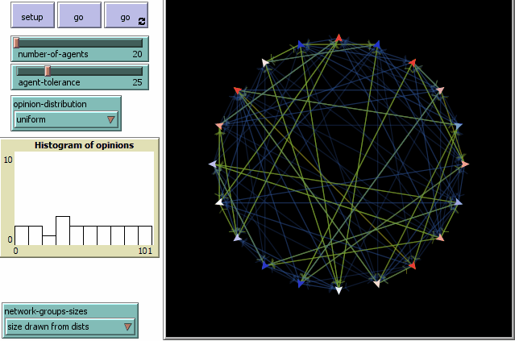
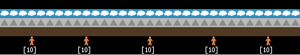

I investigate what big factors in environments, and in the social and cognitive properties of people, connect to patterns of organizational structure and behavior. I use agent-based models, network analysis, text mining, and statistical learning techniques.
I am currently am a computational social scientist and agent-based modeler with the Cooperative Institute for Research in the Atmosphere (CIRA) at Colorado State University, in close affilitation with the National Weather Service. My core project is developing a first-generation agent-based model to simulate human behavior pertinent to inland flooding. This includes simulating 1) decision-making by people on the ground and in the larger network of forecasting and response organizations, 2) information flows in regional sociotechnical systems, and 3) the effects of factors related to the physical environment. I am also involved in developing agent-based models of human behavior as it relates to fire weather. In short, if we build decent models of how human systems behave in the lead up to, and response to, inland flooding, we can provide tools that help people, like emergency managers, save lives. The same with fire.
My dissertation focused on hierarchical structures of social structure. First, I employed a massive literature review to show that we should distinguish between specific types of hierarchy. Second, I used an agent-based model to test what performance tradeoffs might be caused by hierarchy in environments with local hetereogeneities. Lastly, I used 18 years of workforce data to investigate how hierarchy varied among federal government agencies. During my Ph.D. in the Department of Environment and Society, at Utah State University, I was co-advised by Dr. Stefani Crabtree and Dr. Jacob Freeman.
As someone training to be a computational social scientist, I am interested in organizations and social power from a perspective of collective computation, and I am fascinated by processes managing collective action problems in complex systems, from the micro to the macro.
As an interdisciplinary scientist and concerned earthling, I am also interested in more practical topics touching upon organizational structures and complex systems: What organizations and institutions do we need for the climate change challenge we face? What organizational transitions are needed for social movements to create new organizations with functional permanence, and is that even a good idea? At first these may seem like questions at the global scale. But they are also questions for small businesses, community organizations, local chapters of social movements, university extension programs, and neighborhood cooperatives.
You can contact me at stanley.rhodes@gmail.com
Currently in final review, this project simulates simple command hierarchies--the kind of hierarchy represented in an organization chart--in changing environments to understand the performance tradeoffs inherent in adopting a hierarchical structure. The model reveals that environments that vary locally can cause unavoidable tension between the views of front-line workers and managers, or local offices and head offices; even perfect agents find themselves in an inevitable computational dilemma. The best organizational strategy to manage this dilemma is continuing to provide manager input while enabling some degree of worker autonomy. (preprint)
I wrote an appendix on making colorblind-friendly agent-based models for Iza Romanowska, Colin Wren, and Stefani Crabtree's book, which evolved naturally from modifying a number of models in the book to create colorblind-friendly versions. Helping work on the book really opened my eyes to the need for better accessibility and usability in agent-based modeling tools and models themselves. I would like to improve upon this appendix--perhaps writing a whitepaper or a mini-book--by considering a broader scope of accessibility challenges with agent-based models and modeling. If you're interested in this too, send me an email!
Check out the whole book, it rocks: Agent-Based Modeling for Archaeology: Simulating the Complexity of Societies.
Scholars in the social sciences define hierarchy differently, which makes the comparison and integration of research findings on hierarchy quite challenging. This project used text mining methods, working with Google Scholar and Zotero, to collate thousands of papers that define the term hierarchy into a searchable database (~11k papers). The papers were then filtered (~1.1k definitions) and coded by the type of definition. We found that while fields may emphasize one type more than others, most of the time definitions of hierarchy are unclear, and yet semantically reference one or more of the types of hierarchy in the rank-nest-control hierarchy of Zafeiris and Vicsek (2017). Very few definitions fall outside this typology. This suggests that researchers can improve consistency and validity throughout the social sciences by employing the control-nest-rank typology to discern what aspects of hierarchy they are highlighting. This project is finished and the paper is being prepared for publication. A methods paper that generalizes this method is in progress, so that others may use it in studying topics and their ontologies!
This study analyzed the organizational structures of U.S. federal agencies over 18 years to better understand how structures vary among agencies and over time, and whether structure relates to agency mission and purpose. I assembled a dataset from three parts: 1) US Fedscope workforce data for federal agencies from 2004 to 2021; 2) federal rules applying to particular agencies; 3) agency mission statements. I used hierarchical agglomerative clustering analysis and random forest classifier models to investigate patterns in organizational structure and variable importance. Overall, I found that agencies of similar purpose and policy power had similar organizational structures, which were different among clusters. Most agencies were similar in hierarchical structure, with similar levels of management and management spans of control, so hierarchy seems unrelated to purpose and policy power. The exceptions were agencies with many offices across the US, which had broader and taller structures of management, seemingly driven by managing spatial dispersion. This study is methodologically promising for two reasons. First, because the purpose and policy power typology I apply to agencies should be instructive for the development of typologies for other domains; for example, companies could be categorized by strategies in their mission statements. Second, the updated measures of organizational structure (e.g., distinct occupations, levels of management) could be used for any organizations in any domains, enabling researchers to empirically differentiate and characterize the organizational structure of any organization. This project is finished and the paper is being prepared for publication.
Social identity is a key component of political polarization. This agent-based model project builds on work done with an international team that came together at Santa Fe Institute's Complexity Interactive. In that project, we looked at how agent tolerance, network connectivity, and opinion adjustment affected polarization. We're now adding a social identity module that enables agents to use cues (e.g., the clothes someone is wearing) to infer the party identity of the other agent. How does the ability of agents to create co- and cross-partisan stereotypes affect the polarization dynamics of the original model?
The Fremont people of the Great Basin grew more maize--and grew in population--during a period of climate stability from AD 750 to AD 1050. What decision strategies did they employ, and what factors did they consider, as they increased maize agriculture in the region? In collaboration with Judson Finley of Utah State University and Erick Robinson of Arizona State University, I am building models that include a number of important environmental and socio-cognitive factors in an attempt to understand the increase and collapse in Fremont maize agriculture. As more evidence emerges about the extent of Fremont settlements, and the importance of their surrounding hydrological regimes, agent-based modeling provides a crucial tool in understanding the behavior of the Fremont within a coupled human-environmental system.
This experiment uses a game in which players can gobble up resources that slowly regenerate depending on how much of the resource remains. These are rival goods, so taking them both denies them to other players, and reduces the ability of the environment to regenerate more resources. How does enabling hierarchy, vis-a-vis an appointed player leader, change the behavior of groups dealing with these resource dilemmas? This experiment uses Amazon Mechanical Turk to recruit participants. In collaboration with Jacob Freeman of Utah State University and Tam Nguyen of LinkedIn.